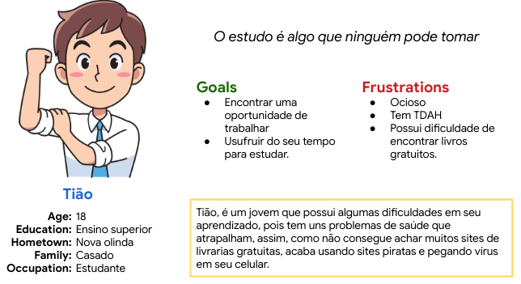
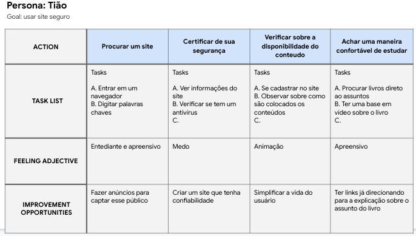
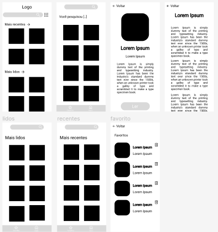
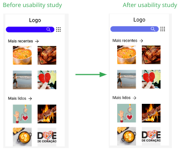
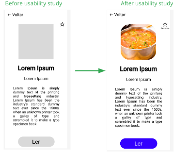
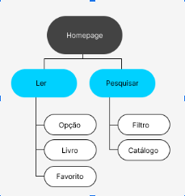
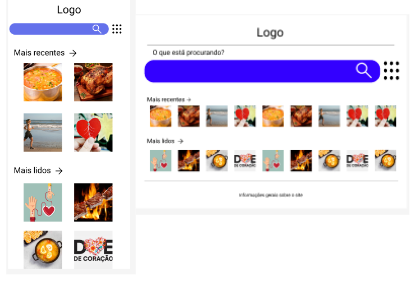

Visão Geral do Projeto
O produto:
A livraria pirata, serve de acervo para as pessoas que querem ler um livro sem anúncio e sem que
fique direcionado para outras páginas, pois por esse motivo que vamos criar esse livraria.
Duração do projeto:
Esse projeto custou 4 dias, em torno de uma hora e meia por dia.
O problema:
Livraria pagas ou com muito anúncio para ler, e acaba tendo vírus em seus anúncios.
O objetivo:
Ajudar a população que gosta de ler sem que tenha muitos problemas.
Minha função:
Sou o executor do projeto todo, tanto quem faz a pesquisa como quem fez o design.
Responsabilidades:
Toda responsabilidade sobre o criador do projeto para construir uma livraria segura para os seus
clientes.
Compreensão o usuário
Pesquisa do usuário:
A pesquisa foi realizada com pessoas que gostam de ler, já que o objetivo da livraria é para
ler. Então usamos um teste de usabilidade, para testar se o usuário tem sucesso em seus teste
que foram realizados.
Pontos de dor:
1 - Sites com muita propaganda
2 - Locais incertos de privacidade.

Personagem: Tião
Tião é um jovem estudante que precisa de uma livraria que não tenha
problemas com segurança, pois não entende muito de informática.

Mapa da jornada:
Para ajudar a criar um site confiável para poder satisfazer as necessidades de muitas pessoas
poder ler com privacidade e sem ser bombardeado com propaganda.
Iniciando o design

Wireframes digital:
Essa tela é a de login, assim quando o usuário entrar no APP. Assim sendo bem simples para que o
usuário entenda como funciona logo de entrada.
Protótipo de baixa fidelidade:
O lo-fi, serve para ter uma ideia das posições e de como irá ficar o App.
Estudo de usabilidade: parâmetros
Study type:
Escala de usabilidade do sistema (SUS)
Localização:
Brasil, remoto
Participantes:
8 participantes
Duração:
3-10 minutos
Estudo de usabilidade:
Descobertas
1 - Que o usuário tinha problemas em pesquisar.
2 - O cliente que soube como usar o site.
3 - O cliente achou muito simples o site/App.
Refino o design

Mockups:
Os mockups é mesmo que o hi-fi, pois não houve tanta mudança no APP, houve apenas uma mudança
sutilmente na cor da barra de pesquisa.

Mockups:
A diferença entre o low-fi com o mockup já está pronto para a produção. Acaba tendo um destaque
na imagem, pois fica visivelmente melhor visão.
Alta fidelidade protótipo:
O hi-fi, apresenta uma estrutura simples onde o usuário usa de forma simples e rápida, sem que
tenha o problema de falta de função.
Considerações de acessibilidade:
1 - Com a estruturação adequada do App, o leitor pode ler sem muitos problemas, pois terá um
sequência seguindo a WCAG 3.
2 - Ao utilizar cores neutras, para facilitar pessoas com problemas de vista, em relação a
claridade. Adicionaremos uma função de contraste de cores no App.
3 - Ao usar poucas animações, ajudamos pessoas que têm problemas com a tremedeira em suas
mãos, para evitar toques acidentais e ativar função sem querer.
Responsive Design

Site Mapa:
Poucas funções, para que o usuário não se perca no fluxo, pois ao se ser simples, fica mais
confiável para que o usuário entenda como funciona.

Designs responsivos
Duas telas, uma de smartphone e outra desktop, a responsabilidade deixa o site mais limpo
dependendo do tamanho, pois assim fica mais fácil para o usuário.
Daqui para frente
Impacto:
Será onde as pessoas que não tem condições ou que querem livros gratuitos, possam ler na web sem
precisar de um APP ou ter que pagar para adquirir.
Aprendizado:
Ao criar um protótipo, se aprende desde o começo até o fim, como fazer as pesquisas e trabalhar
com wireframes.
Próximos passos:
1 - Começaria a desenvolver em uma linguagem que o computador entenda, para o cliente ter acesso
real.
2 - Implantaria em alguma instituição, para que possa melhorar o seu atendimento, e ajudar a
doar os animais que estão esperando por um novo dono.
3 - Compartilharia a ideia com os colegas de sala, para poder dar uma melhor performance no
App.
Apresentação, slides
Aprensetação do estudo de caso